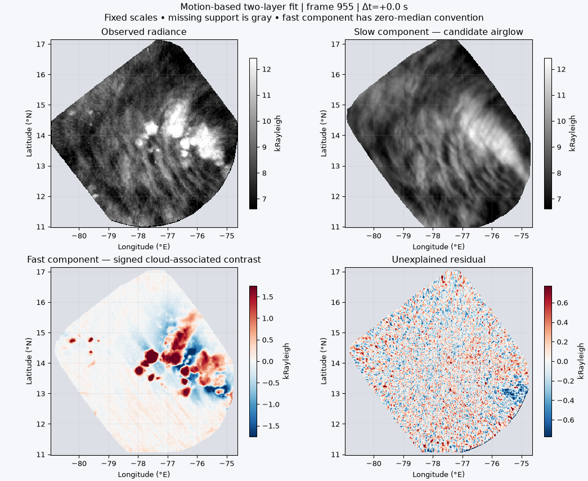
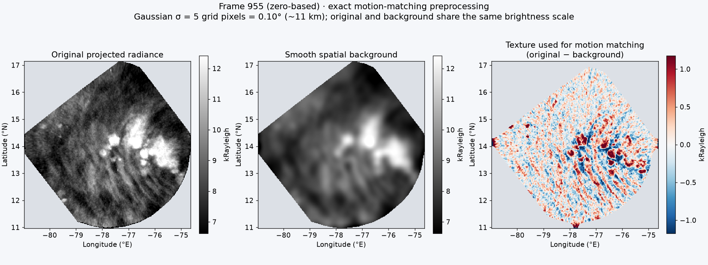
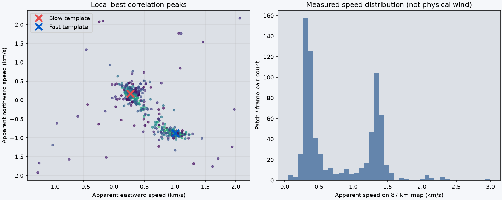
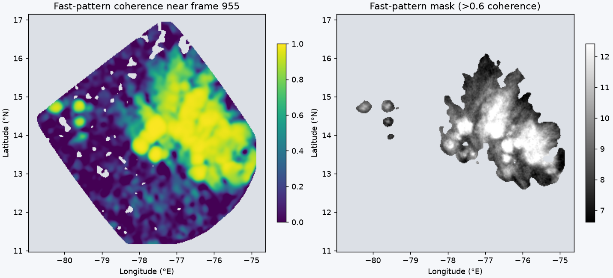

Open the detailed interactive walkthrough: follow a patch through every step →
Frames 930–979, zero-based · 53.9 seconds · the same fixed 87 km latitude/longitude projection.

Top left: observed radiance. Top right: the fitted slow component, a candidate airglow background. Bottom left: the signed fast-moving contrast, associated with the moving cloud features. Bottom right: what the two components do not explain. Color scales stay fixed throughout; gray indicates missing support.
The fast component has a zero-median convention. It is not an absolute cloud-radiance retrieval; constant signal can be exchanged between the two layers. The slow component can retain clouds or other structure that this model cannot distinguish.
Fitted apparent speeds: slow 0.32 km/s northeast; fast 1.34 km/s southeast. On withheld odd-indexed frames, RMSE falls from 0.669 to 0.423 kRayleigh (37%) relative to the slow-only model. Velocities were estimated using all frames. Full metrics.

This is the exact preprocessing used to estimate motion: a Gaussian with σ = 5 pixels (0.10°, approximately 11 km), normalized by valid-data weight. The original and background use the same brightness scale. Matching texture is original minus background; pixels with smoothing support ≤98% are excluded. The background is a spatially smoothed observation containing both layers, not the fitted slow airglow component. The earlier projection viewer used a different, broader σ = 10-pixel smooth for its display panel.

Patch correlations use separations of 8, 16, and 24 frames. Points show the strongest local matches. The fit selects a slow mode inside 0.18 grid pixels/s and a fast mode outside 0.22 grid pixels/s; these are explicit modeling constraints, not a proof of two physical populations. Speeds are apparent speeds on the 87 km map, not winds.

The score measures how much the fast component reduces local residual energy after removing the slow component. A threshold of 0.6 forms an exploratory mask. Scores require adequate coverage and contrast. This is a fit score, not a calibrated cloud probability or independent cloud classification.
Two reference templates translate with constant, independently estimated velocities. Alternating temporal medians estimate each template after subtracting the other. No wrapping or extrapolation is used; each template pixel requires at least 10 contributing frames. Eight iterations are used. A separate fit uses even-indexed frames and predicts odd-indexed frames, comparing the two-layer model against a slow-only baseline on exactly the same valid pixels. Motion estimates use the full sequence, so this checks template prediction rather than fully independent validation.
Local velocity variation, evolving brightness, low texture, persistent overlap, and imperfect source geolocation can leave leakage or ghosting. The separation is experimental. Treat uncertain overlap as unresolved rather than recovered airglow.
Numerical components and mask (NPZ) · Motion candidates (CSV) · Fit metrics · Animation (GIF) · Original projection · Reproduction script